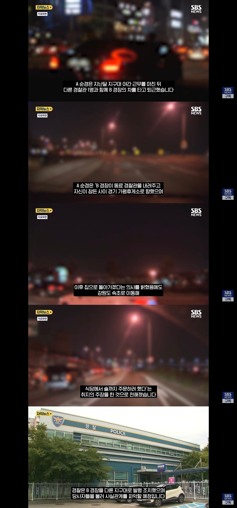

어떻게 한번 자빠뜨려 볼라고 ㅋㅋ

어떻게 한번 자빠뜨려 볼라고 ㅋㅋ
피응신ㅋㅋㅋㅋㅋ
경장 개쪽팔리겠다 ㄷㄷ
경장이 40대냐? ㅋㅋ
대가리 수준 ㅋㅋㅋ
경장이면 8급이라 보통 2030임
지 얼굴에 침뱉기 ㅋㅋ
40대경장이면개폐급인데
여자애들은 22 23경장도있음
그니까
뉴스에 나이라도 나왔나?
너 지적대로
28일 뉴스1에 따르면 인천 삼산경찰서는 감금과 스토킹 처벌에 관한 법률 위반 등의 혐의로 모 지구대 30대 남성 경장 A씨를 직무 고발했다. A씨는 지난달 말쯤 정식 임용을 앞둔 시보 신분의 30대 여성 순경 B씨를 자신의 차량에 태운 뒤 B씨가 잠든 사이 인천에서 속초까지 끌고 간 혐의를 받는다.
30대임
30대 영포티네 그럼
그냥 저런건 영포티여야만 하는거지?ㅋㅋㅋ

???: 0.75포티도 영포티다
반올림포티제 시행해야합니다!!!
30대이기도한데 저런수법은 5060임 ㅋㅋ 영포티시절에 저랬다가는 그냥 철컹철컹임 50대 이상은 저런게 많았지
40대 경장이면 드문데...
경장 30쯤 아니야?
경장이면 주임급 아님?
존나 멀리 튀어가네 ㅋㅋ
경위 아니면 40대일시 엄청 진급 못한거지
순경 4년이면 자동빵 경장이야
그냥 늦게 들어온거임
경찰도 다른 공무원들하고 똑같이 근속승진 있음
가평에서 속초는 미친새낀가 ㅋㅋ
인천에서 속초임ㅋㅋ
낭만병신 ㅋㅋㅋㅋ
k짭새의 병신 소식은 하루를 안 쉬네 ㅋㅋ
ㅋㅋㅋㅋ 아니 왜 말없이 저렇게 멀리가냐곸ㅋㅋ
ㅋㅋㅋ 연애를 커뮤니티에서 배우니 저러지
그냥 혐오에 찌든새끼들은 저런사건은 무조건 영포티여야만함 ㅋㅋㅋ 페미랑 다를게 없음 ㅋㅋ
를 혐오하고있는 너
이건 또 뭔 찐따같은 화법이야 혐오랑 조롱이랑 구분이 안됨?
혐오에 찌든 새끼들, 영포티,페미, 찐따 쓰는 단어랑 어투로 미루어 보아 선생님도 혐오에 익숙하신 분 같아 내로남불이 웃겨서요
말꼬리 잡는 찐따네 ㅋㅋ
혐오랑 지적이랑 같음?
본문은 나이도 안 나왔는데 근거없이 나이 갖다 붙이는 거고
댓글은 그런 행위가 잘못됐다고 지적하는 건데 둘이 같음?
진심 문해력 박살났네
아니 저는 본문이 옳다고 쉴드 치는게 아니라 혐오에 찌드신 분이 자신을 잘 모르고 같은 부류를 공격하는게 재밌어서 놀려봤습니다 역시 재밌네요
미친건가
회식 금지!